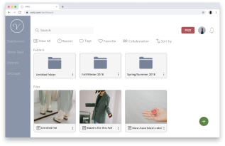
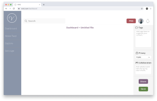
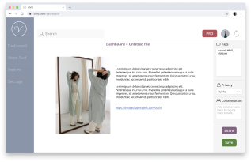

SUMMARY
This project is to create a cloud platform for fashion enthusiasts.
It combined cloud storage and social features in one place. Users can
leverage the convenience to inspire others while getting inspirations
at the same time.
PROBLEM
Cloud storage service is vital. Although several big names already
exist in the market, there is still space hasn’t been covered.
We have search engines to provide materials; we have forums to gather
people with common interests; we have tools to collaborate. How can we
do everything in one space?
SOLUTION
VIVID aims to gather people with the same interest and to provide a
simple yet intuitive experience for users save, share and collaborate.
I created a fashion-related them for the branding, to make the product
distinctive from the cloud storage market.
PROCESS
User Research
A survey was shared out through social media to help determine the
user’s expectations and frustrations.


Competitive Analysis
Some fashion-related content sharing platforms are targeted as
competitors; every app provides their unique value to users. However,
users need to go over different platforms to fulfill their needs. The
application could be more valuable to users if it can include all core
features in one place. Another essential is to integrate with other
platforms to allow users to utilize their content seamlessly.


Stylebook is made for creating fashion journals, but it doesn’t provide
cloud storage and share feature. Lookbook’s social networking feature
allows users to discover inspiration easily; however, the user interface
is not intuitive and out-dated. WEAR comes with built-in shopping
feature which is convenient.
Personas
Based on the result of the conducted user survey and also the
competitive analysis, two user personas were created to elaborate on the
needs of our target users. One is a creative individual intends to
social and express her fashion opinions; the other one is a professional
editor wants to enhance the efficiency of the team and to influence
more audience.


User Flows
Visualized user flows can also help to simplify the process of users
completing each task. Since some of the user stories are related to
others, I grouped some of the stories and illustrated the core user flows.


Wireframe

I sketched the wireframe on paper, to create a brief outlook on the
application. Then I used Figma to build a low-fidelity prototype, which
I could to test with potential users. The results of those user tests
informed multiple iterations of flow design.


Branding
Fashion is dynamic, creative and unpredictable. To avoid conflicts with
the user-generated content, I try to keep the container neutral and
straightforward. I decided to use VIVID as the brand name. VIVID has
the meaning of sharp, bright and outstanding. It represents the vision
of fashion influencers subtly. As all fashion enthusiasts want their
style to be VIVID.
Therefore, I came up with two major designs for the logo; one is only using the printed name of the brand. Another one is the initial 'v' inside a circle, looks just like a stamp. I also want to keep the brand as neutral as possible.
Simple, Trendy and Minimalist are the three words to represent VIVID.
Besides the cleaning looking logo, I used the Morandi color palette to create the color palette of this brand. Earth tone colors are trending these years; they have a contrast between each other but matching subtly with the shade of gray.
Two typefaces are chosen to present VIVID. Nixie One is the typeface for headlines; Open Sans is for context. Serif typeface enhances the awareness of headlines; San Serif typeface makes paragraphs more comfortable to read.
Therefore, I came up with two major designs for the logo; one is only using the printed name of the brand. Another one is the initial 'v' inside a circle, looks just like a stamp. I also want to keep the brand as neutral as possible.
Simple, Trendy and Minimalist are the three words to represent VIVID.
Besides the cleaning looking logo, I used the Morandi color palette to create the color palette of this brand. Earth tone colors are trending these years; they have a contrast between each other but matching subtly with the shade of gray.
Two typefaces are chosen to present VIVID. Nixie One is the typeface for headlines; Open Sans is for context. Serif typeface enhances the awareness of headlines; San Serif typeface makes paragraphs more comfortable to read.


Mock-up
After wireframe and style guide are ready, I moved on to create
hi-fidelity mockup.

Dashboard
The dashboard layout is clean and intuitive. I set the most frequently
used buttons in accent colors, and users can locate them quickly.
Also, white spaces have been implemented to improve the readability of
content.

Upload Content
Users can drag and drop images into the blank spaces and type in the
preferred content, just like working on a white canvas.

Tag, share and collaborate
With the toolbar on the right, users can add tags to organize their
files better; set the privacy of their content; add collaborators to
the project with ease.
User Testing
In addition to gathering feedback via Usabilityhub surveys from the
Internet, I performed tests in person as well. I observed the process
as they moved through the prototype and interviewed the testers afterward.
They suggested adding a sorting feature for users better to find out their desire files, and some minor changes to the visual design.
Here is one of the examples of how users’ feedbacks led my project to the final stage.
Changes happened in the iterations.
Changed the logo to brand name for brand image enhancement.
I have enhanced the accent colors to avoid misunderstanding of disabled buttons.
I have enlarged the size of buttons and font, increasing the ease of use.
I have used different color and large icon for folders to different folders and files.
They suggested adding a sorting feature for users better to find out their desire files, and some minor changes to the visual design.
Here is one of the examples of how users’ feedbacks led my project to the final stage.
Changes happened in the iterations.
Changed the logo to brand name for brand image enhancement.
I have enhanced the accent colors to avoid misunderstanding of disabled buttons.
I have enlarged the size of buttons and font, increasing the ease of use.
I have used different color and large icon for folders to different folders and files.
CONCULSION
By conducting usability tests and preferences tests, users gave me
useful feedbacks that led me how to improve the design. User’s feedback
is the key to success.
Although research is always the first step in the design process,
designers use their first instinct to adapt the research result into
their design. When designers think it is straightforward and easy to
understand, it may not apply to the users in the same way. The
usability test is inevitable.